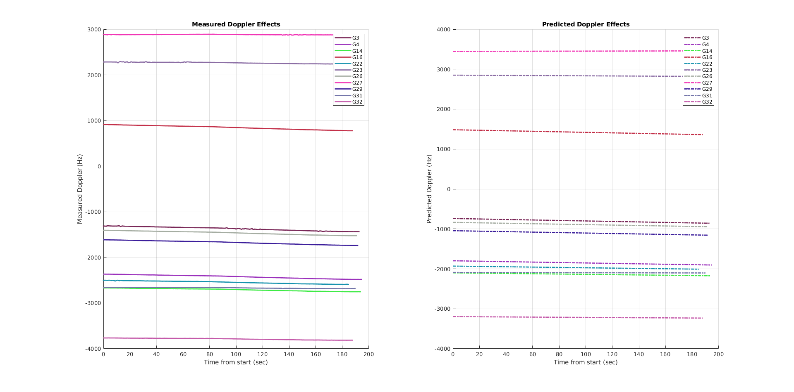

close all;
clear;
clc;
fileID = fopen('Report.txt', 'r');
formatSpec = '%d %f %f %f %d %d %d %d %d %f\n';
sizeA = [10 inf];
A = fscanf(fileID, formatSpec, sizeA);
timeStamps = A(10, :) + 60 * (A(9, :) + 60 * A(8, :));
timeBegin = min(timeStamps);
corrTime = timeStamps - timeBegin;
ASize = length(timeStamps);
PRN = A(1, 1);
startIndex = 1;
satList = {};
figure('units','normalized','outerposition',[0 0 1 1]);
subplot(1, 2, 1);
title('Measured Doppler Effects');
xlabel('Time from start (sec)');
ylabel('Measured Doppler (Hz)');
grid on;
hold on;
subplot(1, 2, 2);
title('Predicted Doppler Effects');
xlabel('Time from start (sec)');
ylabel('Predicted Doppler (Hz)');
grid on;
hold on;
for i = 1:ASize
if (PRN ~= A(1, i) || i == ASize)
color = rand(1, 3);
subplot(1, 2, 1);
plot(corrTime(startIndex:i-1), A(2, startIndex:i-1), '-', ...
'LineWidth', 2, 'color', color);
subplot(1, 2, 2);
plot(corrTime(startIndex:i-1), A(3, startIndex:i-1), '-.', ...
'LineWidth', 2, 'color', color);
satList = [satList, sprintf('G%d', PRN)];
startIndex = i;
end
PRN = A(1, i);
end
subplot(1, 2, 1);
legend(satList);
subplot(1, 2, 2);
legend(satList);
saveas(gcf, 'Graph.png');
